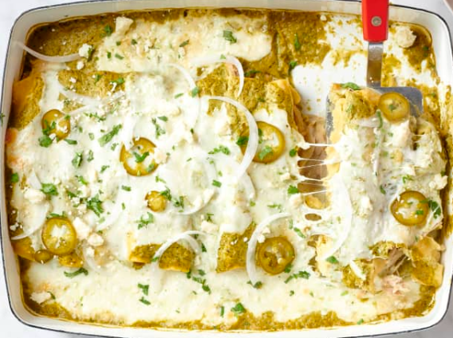

Home
Cheesy Enchiladas Suizas
Baked in creamy salsa verde sauce and topped with gooey Oaxaca cheese, these chicken enchiladas are unbelievably delicious.

What Are Enchiladas Suizas?
Enchiladas suizas is a popular Mexican dish made of corn tortillas stuffed with shredded chicken that are topped with a creamy green sauce and cheese, and then baked until bubbling and melted. The name comes from the Spanish word “suiza”, which means “Swiss.” This enchilada variation was first created at a Mexico City department store café in the 1950s. These Swiss-style enchiladas get their name from the inclusion of cream and cheese.
Ingredients in Enchiladas Suizas
-
Salsa verde.
This recipe calls for making your own salsa with blended tomatillos, poblanos, jalapeños, cilantro, and onions. If you prefer, grab your favorite store-bought brand.
-
Mexiican Crema.
Crema is incorporated twice in this recipe. First, it’s mixed into the salsa, as well as mixed into the cheese topping to ensure everything is as creamy and luxe as possible.
-
Corn tortillas.
Corn tortillas add a distinctive flavor to the dish and have a more delicate texture than flour tortillas.
-
Shredded chicken.
Skip the hassle of cooking the chicken yourself and pick up a rotisserie chicken.
-
Oaxaca cheese.
Mild Oaxaca cheese melts perfectly over the enchiladas, but low-moisture whole milk mozzarella makes a great substitute.
-
Toppings.
Sprinkle the baked enchiladas suizas with cilantro, crumbled queso fresco, white onion, and pickled jalapeños for added crunch and flavor.

How To Make Enchiladas suzias
-
Make the salsa verde.
Broil tomatillos, poblanos, jalapeños, onions, and garlic until charred and softened. In a blender or food processor, blend all of it with Mexican crema and fresh cilantro until creamy and smooth.
-
Cook the corn tortillas.
Pan-fry the tortillas for a few seconds on each side to make them more pliable and sturdy for assembly.
-
Assemble the enchiladas.
Fill each tortilla with shredded chicken and roll to close. Place seam side down in the baking dish, scooch it over, and repeat. The enchiladas should be nice and snug so that they all fit. Pour the salsa over the enchiladas.
-
Add cheese over the top.
Dollop a mixture of shredded Oaxaca cheese and Mexican crema over the saucy enchiladas.
-
Bake the enchiladas.
Cook enchiladas in the oven until the cheese is melted and the sauce is bubbling.
-
Serve with fresh toppings.
Serve enchiladas warm, topped with cilantro, crumbled queso fresco, pickled jalapeños, and thinly sliced onion.

INGREDIENTS
- 1 pound tomatillos (8 to 10)
- 1 medium white onion
- 2 medium jalapeño peppers, divided
- 1 medium poblano pepper
- 3 cloves garlic
- 2 cups shredded boneless, skinless cooked chicken (9 to 10 ounces)
- 4 ounces Oaxaca or low-moisture mozzarella cheese
- 1 cup Mexican crema or sour cream, divided
- 1 medium bunch fresh cilantro
- 2 teaspoons kosher salt, divided, plus more as needed
- 2 to 4 tablespoons neutral oil, such as canola or vegetable
- 12 (about 5-inch) corn tortillas
- 2 tablespoons apple cider vinegar
- 2 tablespoons water
- 1 tablespoon granulated sugar
- 2 ounces queso fresco cheese
INSTRUCTIONS
- Arrange a rack in the middle of the oven and heat the oven to broil on high.
- Prepare the following, adding each to a rimmed baking sheet as you complete it: Peel and quarter 1 medium white onion through the root, then trim off the root. Place 2 wedges on the baking sheet and reserve 1 wedge for serving (reserve the remaining wedges for another use). Remove the papery husks from 1 pound tomatillos, then rinse off the sticky residue. Halve the tomatillos. Trim the stems from 1 medium jalapeño and 1 medium poblano pepper. Remove the seeds from the poblano.
- Add 3 peeled garlic cloves. Arrange the ingredients cut-side down in an even layer. Broil for 8 minutes. Flip the peppers, then continue broiling until the tomatillos and peppers are charred in spots, 5 to 7 minutes more. Remove the baking sheet from the oven and set aside to cool slightly, about 10 minutes.
- Meanwhile, heat the oven to 350ºF. Shred 2 cups boneless, skinless cooked chicken into bite-sized pieces and season as needed with salt. Grate 4 ounces Oaxaca or mozzarella cheese on the large holes of a box grater (about 1 cup). Place the cheese and 1/2 cup of the Mexican crema in a small bowl and stir to combine.
- Very coarsely chop the leaves and tender stems of 1 medium bunch fresh cilantro until you have 1 cup and place in a blender or food processor fitted with the blade attachment. Add the broiled ingredients (reserve the baking sheet), remaining 1/2 cup crema, and 1 1/2 teaspoons of the kosher salt. Blend or process until smooth. Taste and season with more kosher salt as needed.
- Wipe the baking sheet clean with a paper towel, then line with more paper towels. Heat 2 tablespoons neutral oil in a small skillet over medium heat until shimmering. Using a pair of tongs, dip 12 corn tortillas, one at a time, into the oil to soften them, about 10 seconds per side (this softens them for easy rolling and keeps them from breaking apart). Add 1 to 2 tablespoons neutral oil to the skillet as needed if the skillet is dry. Place the tortillas on the baking sheet in 2 layers, with more paper towels between the layers.
- Assemble the enchiladas: Spread 1/3 of the sauce (about 1 cup) evenly on the bottom of a 9x13-inch baking dish. For each enchilada, place about 2 1/2 tablespoons of the chicken on a tortilla across the lower third; roll it up tightly to enclose the chicken. Place seam-side down in the baking dish against the short side. Place each enchilada snuggly up against the previous one. If you run out of room, place the last few along the bottom of the baking dish.
- Pour the remaining sauce over the enchiladas and spread into an even layer. Dollop the cheese and crema mixture evenly over the top.
- Bake until the cheese is melted and the sauce is bubbling around the edges (some browning is okay), 30 to 40 minutes. Meanwhile, prepare the toppings.
- Trim and thinly slice the remaining jalapeño crosswise into coins. Place in a small, microwave-safe bowl. Add 2 tablespoons water, 2 tablespoons apple cider vinegar, 1 tablespoon granulated sugar, and the remaining 1/2 teaspoon kosher salt. Microwave until the salt and sugar dissolve, about 1 minute. Thinly slice the reserved 1/4 white onion. Crumble 2 ounces queso fresco cheese (about 1/2 cup). Coarsely chop more leaves and tender fresh cilantro stems until you have about 2 tablespoons.
- Garnish the enchiladas with the onion, queso fresco, pickled jalapeños (removed from the brine), and cilantro before serving.
RECIPE NOTES
-
Substitutions:
2 1/2 cups store-bought salsa verde blended with 1/2 cup crema can be used in place of the enchilada sauce.
-
Make ahead:
The enchilada sauce can be made up to 2 days in advance and refrigerated in an airtight container.
-
Storage:
Leftovers can be refrigerated in an airtight container for up to 4 days.